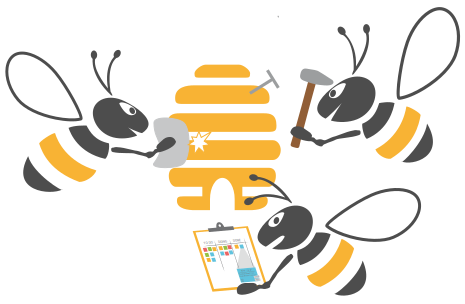

TOP IT Services
We have solutions for your digitalization challenges.
Request our service in German or English.
Technology

The digital transformation has already begun. Don’t panic, be happy! We can help you to learn and specialize your knowledge in Docker, Kubernetes, Microservices, Traefik, Prometheus or GitLab/CI with our experienced coaches. We regularly offer trainings in your area or come to you on demand.
Organisation

Use the agile DevOps culture and Software Craftsmanship practices for the transformation of your organization and technology. We help you with agile transition concepts and technologies such as Continuous Delivery, Cloud Infrastructure & Container Technology to create brilliant software.
Purpose

Set the basis for technological excellence together with us. We are your mentor for the operational challenges of your digitalization strategy. We can help to find the right way to create faster business value.